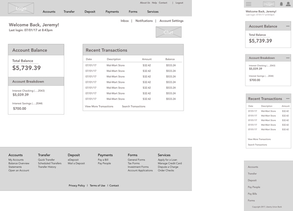

UX Project: Liberty Union Bank
A Responsive Online Banking Website
Overview
Liberty Union Bank is a new branch of banks located in the midwest area of the the United States. They are going to be opening their brick and mortar locations later this year and need to make sure their website is up and running at the time of launch.
This report includes research, designs, and testing conducted to create a top-notch user experience on the web. In this report, we will go through the following:
- Business Goals
- Competitive Research
- User Personas
- User Surveys and Interviews
- UI Requirements
- Site Map & User Flows
- Wireframes
- Usability Testing
- Key Findings
- Mockups
Research Phase
During the research phase, information about the company and users were collected and analyzed. The importance of this phase is to know exactly what was being designed and who it was being designed for. Through competitor research, user interviews, and user surveys, I was able to come up with an accurate archetype of who the site should be designed for. Design choices such as color palette, layout, screen flow, site features, and other options all are affected by an understanding of the audience.
Business Goals
Throughout this project, we looked at goals for Liberty Union and their customers. This included both business goals for the website, as well as for their brick and mortar location.
Liberty Union Bank’s primary business goals include:
- Become the leading bank in the entire midwest region of the United States.
- Build a strong customer base with brand loyalty.
- Be a profitable company by the year 2019.
- Keep users using the app and website to decrease costs of bank tellers
Competitor Analysis
Most banks already have an online presence, so Liberty Union Bank is able to capitalize on features found during the competitor research phase. For this phase, we looked at a bank, a credit union, and Paypal.
After getting a broad sense of these features, a report was compiled with the top 3 competitors.
Each feature was divided up into a Feature Matrix. The Feature Matrix consisted of elements that would fall into 4 categories:
- Low Cost, Low Value
- Low Cost, High Value
- High Cost, High Value
- High Cost, Low Value
User Interviews
To gain a sense of who Liberty Union Bank’s target audience is and what their banking behaviors are, user interviews were conducted. The topics in the interview included online behavior, banking habits, online banking behavior, and demographics. Below is an image of some of the interview questions.
This research was used to find out answers to the following questions:
- Have you ever signed up for a bank before?
- What made you decide on the bank you chose?
- Why do you use a bank?
- What problem does a bank solve for you?
- What features do you enjoy most with your bank?
- Do you manage the banking in your household?
- How many times have you had to do a banking activity such as transfer money or deposit a check within the past month?
Surveys
Surveys were conducted along with interviews to gain a better understanding of the consumer. The surveys were built using Google Forms, and then disseminated to the particpants. All surveys were done anonymously and data was collected in spreadsheet format.
User Personas
User Personas were created from the user interviews and surveys. It was determined through research that those between the ages of 18-35 engaged in online activity, especially banking the most. Once determined, I was able to understand key traits about this group and what the targeted persona should look like.
Empathy Mapping
One important part of building a defined user audience is creating empathy maps. Empathy maps allow us to get inside the head of the user and understand what their day to day life is like.
For this specific example, I created an empathy map for the day in the life of a working 18-35 year old who needs more time in their day.
UI Requirements
After the user research part was getting close to finalized, UI requirements were written up. The purposes of UI Requirements is to understand what the critical tasks are and to determine the pages that are needed to accomplish the task. UI Requirements act as a blueprint and help to remember to include all pages in the design. For this project, I looked at the following tasks:
- User lands on homepage and wants to view their account balance.
- User logs in and wants to pay their bills.
- User wishes to transfer money into non-Liberty Union Bank Account
- User wishes to deposit a check.
- User wishes to view their monthly statement.
Information Architecture
Next in the project was building a solid information architecture that is easily navigated and understood by the user. For this particular project, building a clear and intuitive site flow and heirarchy of pages was extremely important.

User Flows
Visualizing the tasks the user would take and how they would flow from one section of the site to another was important.
During this process, important questions and decision points were introduced to understand the path of the user.
For this project we looked at the path the user would take to log in to the website, and then navigate to the "bill pay" section to pay a bill.
Responsive Wireframes
Based off of all the previous research and UI Requirements, wireframes were then constructed. A responsive website geared towards all platforms was extremely important, so responsive wireframes were built. The following pages were created for usability testing:
The following pages were created for usability testing:
- Homepage
- Custom User Page
- My Account Section
- Transfer Money Section
- eStatements Page
- Deposit a Check
- Bill Pay Section
- People Pay Section
- Forms Section
- Services Page
- Order Checks Section
Wireframes

Usability Testing
Once the wireframes were completed, usability testing began through the creation of interactive prototypes.
InVision was used for Usability Testing during this process. Wireframes were connected via hotspots set up in InVision, so the user was able to easily navigate through the site.
A detailed Usability Testing Plan was constructed and participants were recruited.
As part of the testing plan, users were asked to complete various tasks while observations were noted. Tasks included:
- You are out of checks. Reorder the checks you previously ordered.
- Where would you go to find a history of recent bill payments you’ve made?
- Find your bank tax form for the year 2016
- You have to pay your friend Jimmy Jones some money. He just moved though. Edit the information for your contact “Jimmy Jones” to change his address.
Key Findings
Valuable insight was gained when monitoring user behavior during the usability testing phase.
One of the areas that was an issue was paying for a bill from a company. When the user went to add the company, instead of choosing from existing companies already added by the bank, they went to add the new company in from scratch.
Adding a company in, rather than selecting one already implemented, can cause delays in payments being made, and more work on the bank’s end to verify the company and their information.
The images below show the changes made as a result of the Usability Testing. The “add a company” button was made smaller and less obvious to the user so they would look through the company list first before choosing to add a company.
Logo and Icon Creation
Once the research and wireframing phase was completed, I focused on logo creation by exploring different typography and icons.
Style Tile
After choosing and refining the logo, an overall look and feel of the app was explored. For this, a style tile was created. The purpose of the style tile was to give the client a feel for how the app will be designed before all the work goes into the actual mockups.
There was a lot of work that went into the style tile. This included finalizing the logo and choosing the color palette, as well as creating icons for navigation, comparing color schemes, choosing fonts, and looking at imagery.
High Fidelity Mockups
The last part of the project was finalizing the mockups and creating a UI Kit. The mockups were created in Sketch and the style tile and wireframes were used as a guide in building them.


UI Kit
Finally, a UI Kit for the app was created. The UI Kit is a blueprint for the developers to know exactly what colors, font sizes, etc. are used throughout the app.

Next Steps
As part of the next steps for this project, further usability testing will be done with the finalized mockups to determine what tweaks will need to to be done.
Through research, the “Pay a Bill” feature seemed to be a popular area among online banking customers. One way to make sure that this design is successful is to ensure that all popular companies and their bill payment features are implemented into the system for easy transfer of payment.
Additional research could be done to determine what companies users in each region use for paying bills and begin to add those in the system. This part of the project will need to be done on an ongoing basis as new companies emerge for consumers.
Conclusion
Throughout this project, many features of online banking were explored and implemented including Account Detail Listings, Bill Pay, People Pay, Services such as Ordering Checks, eStatements, Forms, and Transferring money between accounts.
This project required a lot of research about what features users use when online banking. One of the most difficult parts was to determine an easily understood user flow for various tasks such as paying a bill.
Through competitive analysis, research, and an understanding of ux design, this was successfully implemented, however, like any design, it will need to be monitored and feedback among users will need to be collected continually to ensure there are no additional problems and to improve upon what is already done.